Maho Haraguchi
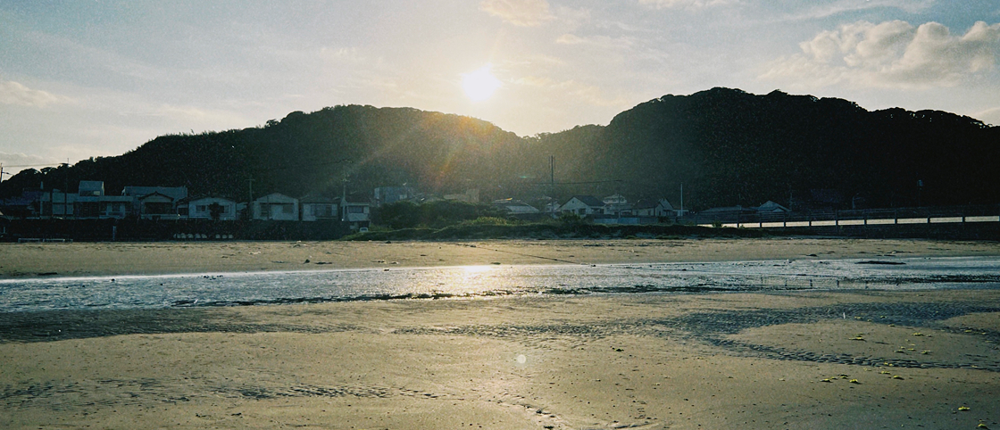
Profile
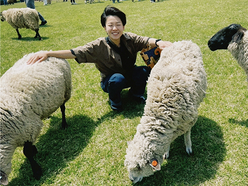
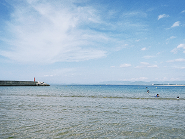
ハラグチ マホ
原口 真穂
大学卒業後、Webデザイナーアシスタントや物件カメラマンとして勤務。 その後、1度クリエイティブ職から離れたことで「デザイン業務へのやりがい」を再認識し、Webデザイナーの道へ進むことを決意。 現在は職業訓練にてWebデザインを体系的に学びなおし中です。 目的から逆算して「効果のあるデザイン」を作り、課題解決や目標達成に貢献できるデザイナーを目指しています。 動物との触れ合いや音楽鑑賞、海でぼーっとすることが好きです。Skills
Photoshop
使用歴 : 約4年（実務3年7ヶ月）
実務ではWebデザインやバナー制作、 写真のレタッチを行う際にメインツールとして 使用していました。 さらに職業訓練を経て、 基礎から応用まで体系的に習得しました。
Illustrator
使用歴 : 約2年（実務1年8ヶ月）
ロゴやアイコンなどWebデザイン用の素材や、フライヤーなど印刷物デザインに使用しています。さらに職業訓練を経て、基礎から応用まで体系的に習得しました。
Figma
使用歴 : 約6ヵ月（実務なし）
職業訓練にて基本操作からデザインへの応用までをしっかりと学習しました。主にワイヤーフレームの作成や、コンポーネントを活用したデザインカンプの制作で使用しています。
HTML / CSS
使用歴 : 約6ヵ月（実務なし
職業訓練にて基礎から学習し、Webクリエイター能力認定試験にも合格しました。基本的なコーディングが可能です。
Premiere Pro
使用歴 : 約2年（実務1年8ヶ月）
実務ではSNS投稿用の動画編集のほか、ブライダル動画編集の経験があります。カット編集、テロップ挿入、BGM調整など、基本的な一連の動画編集が可能です。
Photography
使用歴 : 約4年（実務3年7ヶ月）
一眼レフカメラを用いたマニュアル撮影が可能です。物撮り、簡易的な人物撮影、物件撮影の実務経験があります。LightroomやPhotoshopを使用したレタッチまで一貫して対応できます
Works
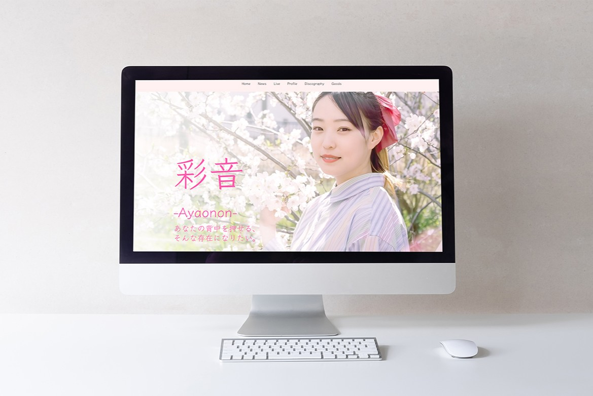
彩音-Ayaonon様 HP
Client Work / Web Site

私のポートフォリオサイト
自主制作 / Web Site
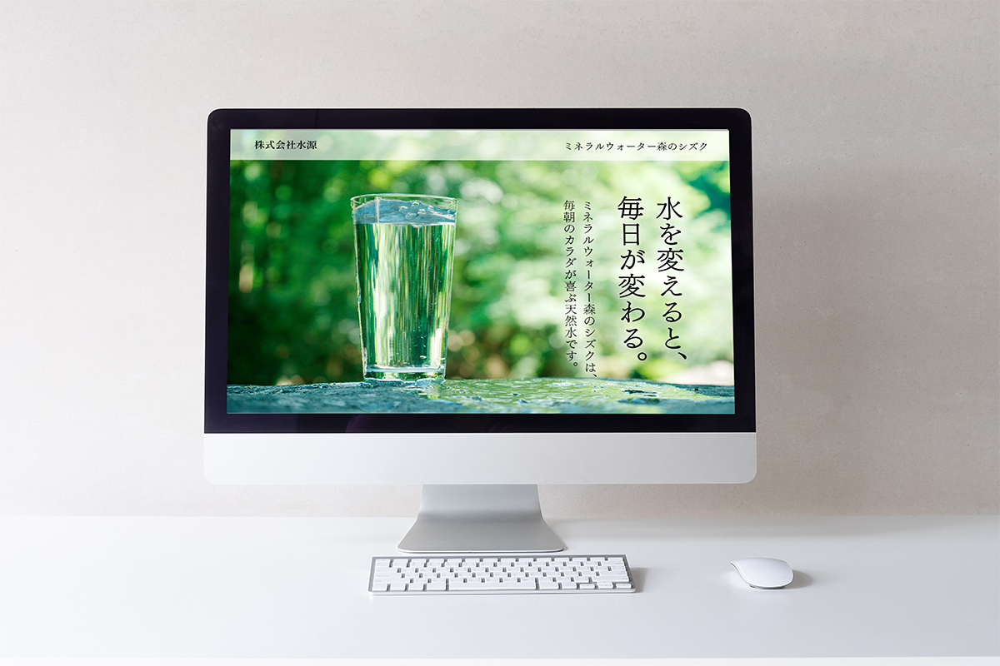
天然水LP
自主制作 / LP
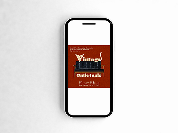
セール告知バナー
自主制作 / Banner
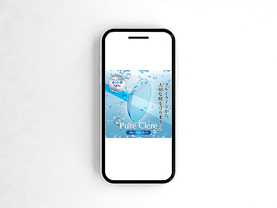
コンタクトレンズバナー
自主制作 / Banner
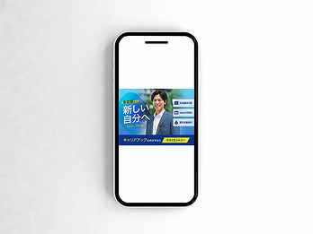
求人広告バナー
自主制作 / Banner
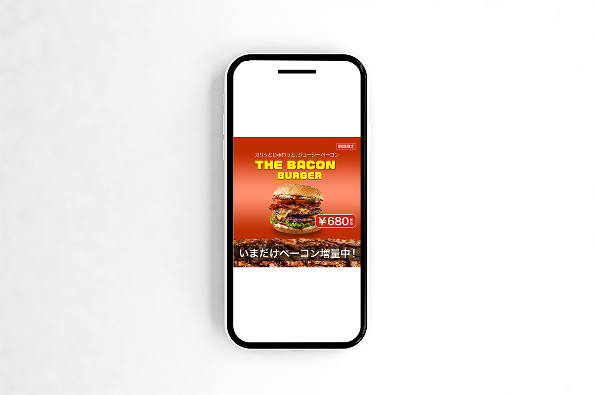
期間限定ハンバーガーバナー
自主制作 / Banner
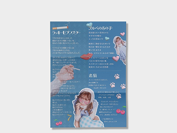
音愛様 歌詞カード
Client Work / Graphic
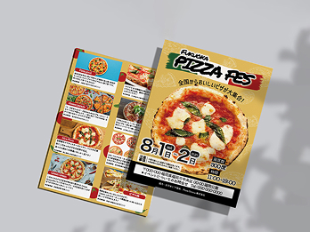
ピザフェスタチラシ
自主制作 / Graphic
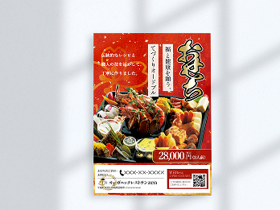
おせちチラシ
授業課題 / Graphic
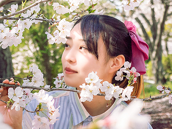
彩音-Ayaonon様 撮影
Client Work / Photo
小瓶撮影
Personal Work / Photo